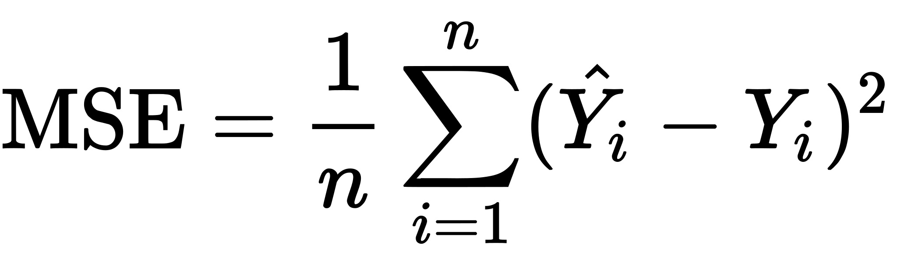
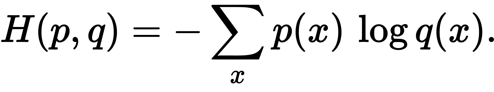

The method used to evaluate the performance of a machine learning model is increadibly important. Not just for you to know how well it is performing at a given task, but for the model to know how well it is doing itself. With supervised learning this is how the algorithm knows what type of good behavior to reward and what type to punish. Choosing the right performance measure in an ML task is far from trivial and depends entirely on the task at hand. For instance, you would not use the same method to determine how close a predicted stock price is from its actual price as you would to determine the realism of a synthesized portrait. Ultimately, the quality of the performance metric used to evaluate the success or failure at a specific task greatly influences the success of that task itself.
All machine learning algorithms rely on a loss function that measures the error produced at each training iteration. This scalar-valued error is simply the distance a predicted value is from a target value. In a supervised learning algorithm, the error is given by L(y^, y), where loss L is a function of the predicted output value y^ (y hat) and the target value y. How this distance is measured depends greatly on the task at hand. One common loss function for regression tasks is Mean Squared Error (MSE). MSE is simply the average squared error of all training samples.

function mse(a, b) {
let error = 0
for (let i = 0; i < a.length; i++) {
error += Math.pow((b[i] - a[i]), 2)
}
return error / a.length
}
Marginal note: See here for MSE implemented in C, Python, and JavaScript.
For classification, categorical cross-entropy is a popular loss function. The categorical cross-entropy of two discrete probability distributions p and q is:

If your eyes just glazed over, don't worry. For most practical purposes the loss functions for common tasks are bundled in machine learning libraries. Ignorance is bliss.
L is often the sum of a few different heuristically weighted functions customized for the task at hand. For most practical purposes the words, "loss", "cost", and "error" can be used interchangably.
Next: Linear Regression